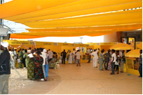
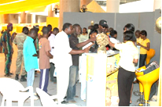
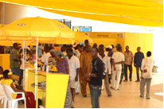
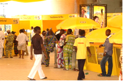
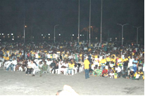
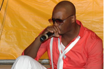

Y'ello Chat
Foire MTN du Mobile 2008
Du 19 au 31 Décembre 2008 au Palais des congrès de Cotonou, MTN Bénin a offert à la population béninoise une foire unique en son genre : la Foire du Mobile ! Cet événement a rassemblé sur un même site une cinquantaine de vendeurs de téléphones et d'accessoires, des distributeurs agréés et revendeurs de produits GSM, des réparateurs de téléphones… Les visiteurs ont également pu bénéficier d'une assistance personnalisée sur le stand MTN et des séances de démonstration et d'activation sur les services récemment lancés : MMS, Mobile Internet, MTN ZIK, MTN Zone… La Foire du Mobile s'est achevée par un concert gratuit avec de nombreux artistes : Ardiess, FIFA, Don Metok, Mci Mca et les internationaux : DJ Debordeaux et Singuila. Rendez vous l'année prochaine pour la 2ème Edition!
 
 
 